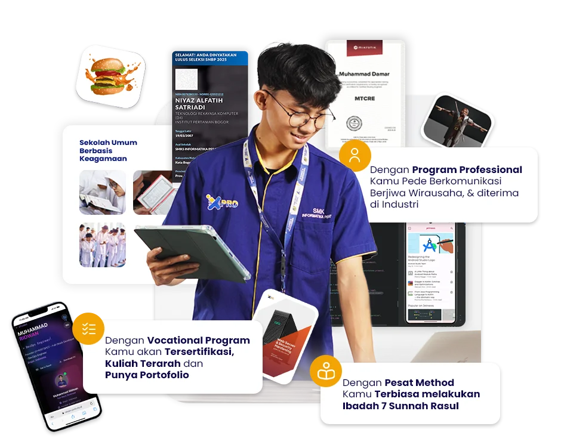

TELAH DIPERCAYA OLEH 2000+ ORANG TUA & SISWA
Kompetensi Teruji dengan Portofolio
Level Industri
Sekolah Vokasi Informatika Terbaik dengan 3 Jurusan di Bidang IT :
- Teknik Komputer dan Jaringan
- Desain Komunikasi Visual
- Rekayasa Perangkat Lunak

lihat program sekolah
daftar sekarang
Perusahaan tempat siswa magang dan alumni kami bekerja


dan 40+ Perusahaan lainnya

Vocational Program
- Memiliki Portofolio Level Industri
- Memiliki Sertifikasi Kompetensi
- Kuliah Terarah ke PTN/PTS
Professional Program
- Berkarakter
- Berkomunikasi Efektif
- Diterima di Dunia Usaha/Dunia Industri
- Berjiwa Wirausaha


Religius Program
- Menjaga Wudhu
- Shalat Dhuha
- Berdzikir
- Tadarus Al-Qur'an
- Berinfaq Shadaqoh
- Shalat Berjamaah
- Shalat Tahajud
3 Jurusan IT
Berikut ini adalah Jurusan IT yang terdapat di sekolah kami
teknik komputer & jaringan
Jurusan yang berfokus pada Kompetensi :
- Computational Thinking
- Dasar Komputer
- Dasar Jaringan
- MikroTik MTCNA Curriculum
- Cisco CCNA Curriculum
- Administrasi Server
- Server Hardening
- Next Generation Firewall
- Cyber Security
Download silabus
desain komuniksai visual
Jurusan yang berfokus pada Kompetensi :
- Nirmana
- Ilustrasi Digital
- Desain Vektor
- Desain Editorial
- Fotografi & videografi
- Digital Imaging
- UI/UX Desain
- Motion Grafis
- 3D Modeling
Download silabus
rekayasa perangkat lunak
Jurusan yang berfokus pada Kompetensi :
- Computational Thinking
- Web Desain dengan html,css,js
- UI/UX Desain
- CMS
- Laravel
- Tailwind CSS
- React native
- Expo
Download silabus
Portofolio